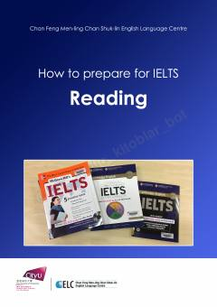

HTIELTS reading imtihoniga tayyorgarlik ko'rish uchun amaliy qo'llanma va strategiyalar.
Ushbu qo'llanma IELTS imtihonining o'qish (reading) bo'limiga tayyorgarlik ko'rish uchun mo'ljallangan bo'lib, savol turlari, test strukturasi va samarali strategiyalarni batafsil tushuntiradi. Kitobda ko'p tanlovli savollar, qisqa javoblar, jadvallarni to'ldirish va boshqa topshiriqlarni bajarish yo'llari ko'rsatib o'tilgan. Materiallar imtihonda yuqori ball olishni istaganlar uchun amaliy maslahatlar bilan boyitilgan.